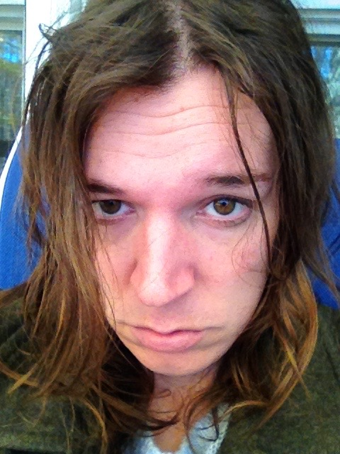

I'm Joshilyn, Joshee for short.

I'm a graduate student at the University of Michigan School of Information.
I am not exactly sure what I want to do with myself, but whatever it is, it should be at the intersection of language, law, medicine, music, computers, feelings, and psychology.
You can explore more of my specific interests by clicking on the "interesting stuff" link.
I am a hardcore cat lady. I love music a lot and you can check some music that I've made by clicking the music link above.